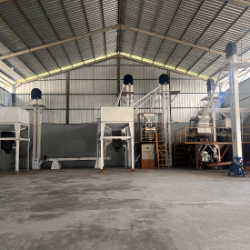
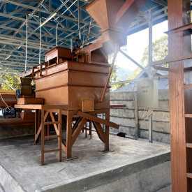
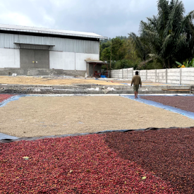
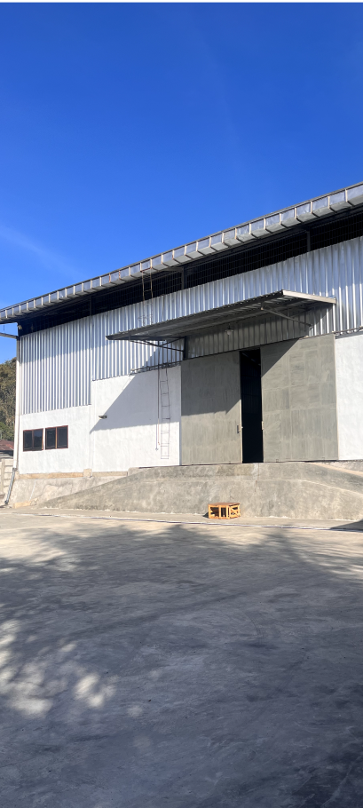

We are offering to the world the unique experience of the most immaculate forest coffee and other distinguished qualities of Indonesian specialty coffee.
Dedicated to delivering the highest quality of Indonesian Forest and other specialty coffee to the world with fairness, and professionalism.



